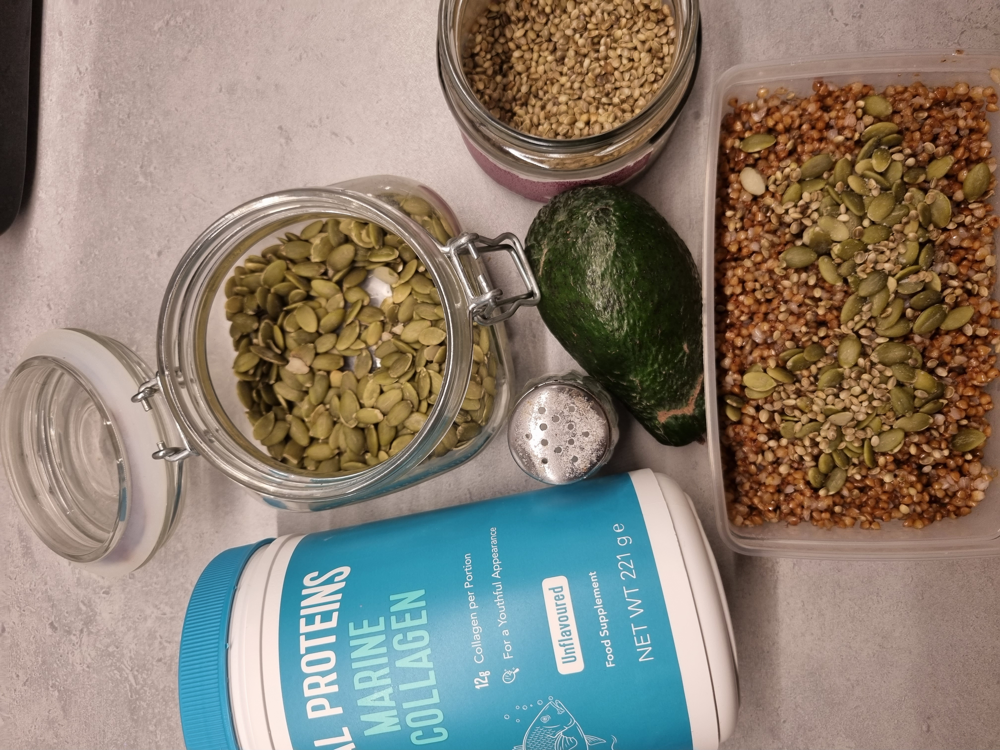

Healthy Buckwheat

Description
If you're looking for a healthy and light breakfast or dinner idea, here's an option for you.
Buckwheat is a great source of complex carbohydrates, that helps you feel full for longer periods of time.
This meal is rich with proteins and fiber too and super easy to make.
Ingridients
- Buckwheat
- Avocado
- Pumpkin seeds
- Hemp seeds
- Salt
- Extra Virgin Olive Oil
- Collagen Powder (optional)
- Tumeric (optional)
Steps
- Boil the buckwheat.
- Cut the insides of avocado in cubes.
- Put boiled buckwheat in a bowl (or a container if You want it to go).
- Mix in salt, tumeric and collagen.
- Drizzle some olive oil.
- Drop in those avocado cubes.
- Sprinkle with hemp and pumpkin seeds.
And Voila! Your buckwheat is ready!